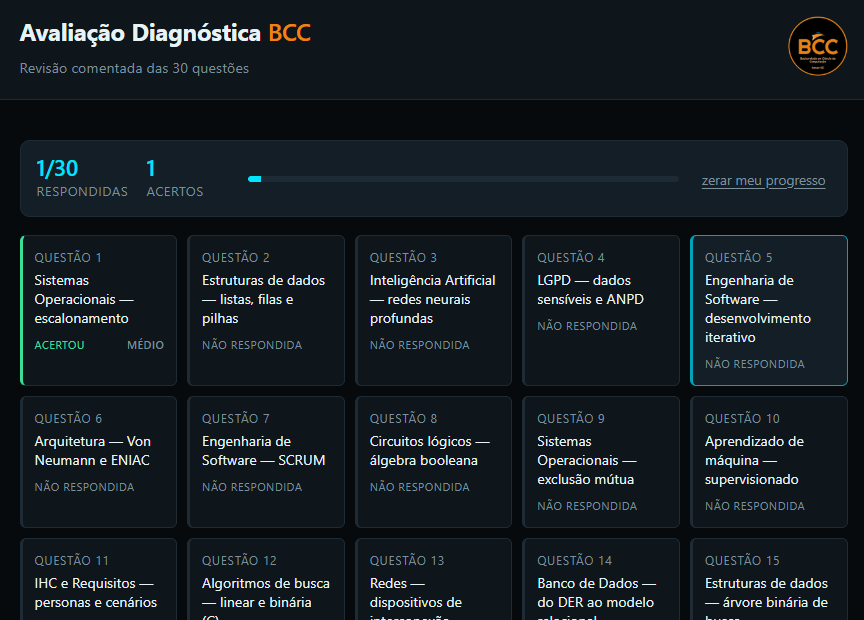

O que é a Avaliação Diagnóstica?
A Avaliação Diagnóstica é uma simulação com 30 questões que cobrem o conteúdo de todo o curso de Ciência da Computação, passando por disciplinas como Estruturas de Dados, Banco de Dados, Redes, Sistemas Operacionais, Engenharia de Software, Inteligência Artificial, Arquitetura de Computadores, Estatística e LGPD, entre outras.
A maior parte das questões é baseada no Enade 2021 para Ciência da Computação (bacharelado), divulgado pelo INEP/MEC, e algumas são autorais do professor. Cada questão mostra o percentual de acerto de todos os concluintes do país naquela edição do Enade, permitindo comparar seu desempenho com a média nacional.

Esta é apenas uma simulação: você pode realizá-la quantas vezes quiser, e seu progresso fica salvo somente no seu navegador.
No último semestre do curso, uma Avaliação Diagnóstica oficial é aplicada e vale até 1 ponto na média de qualquer disciplina em que você estiver matriculado. Por isso, vale a pena se preparar com antecedência através da simulação.